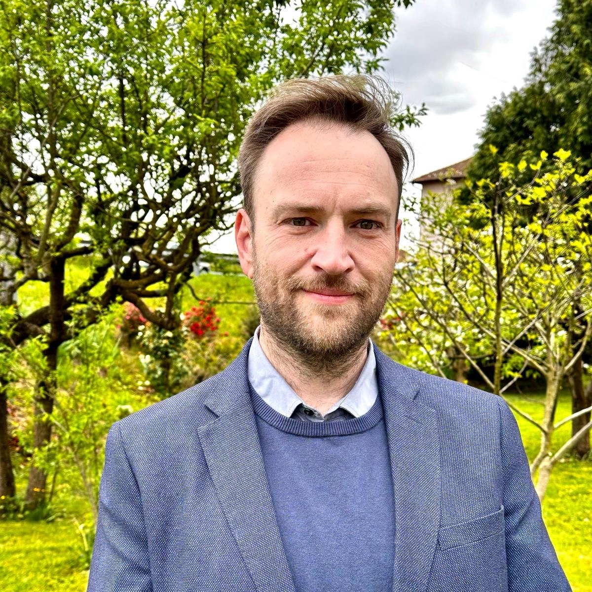

Gli ultimi mesi, a Maggiora, sono stati molto intensi. Sono emersi molti temi importanti, che sono stati occasione di incontro e dialogo tra cittadini provenienti da esperienze professionali e culturali diverse, accomunati da un valore molto importante: l'amore per il nostro paese.
In questo contesto diverse persone mi hanno chiesto di candidarmi come Sindaco alle prossime elezioni comunali. Questa proposta, che mi ha sorpreso e onorato, arrivava da persone per cui nutro la massima stima e rispetto. Ho accettato, quindi, la sfida con coraggio ed entusiasmo, e abbiamo formato una squadra di persone pronte a mettersi in gioco per il bene comune, e che possano portare qualità umane, esperienza e competenza. Così è nata la lista civica ViviAmo Maggiora.
Il nostro, è il paese delle eccellenze: l'Antonelli, lo sport, il vino, la musica, le opere sociali e le manifestazioni locali. Maggiora è un luogo bello da vivere, dove si può fare comunità, fare famiglia, dove i bambini possono crescere al sicuro e dove gli anziani possono vivere in serenità. Maggiora si trova in una posizione strategica, incastonata tra il distretto dei laghi, i vigneti dell’Alto Piemonte e le montagne della Valsesia, e può offrire molto dal punto di vista dell'enogastronomia, della natura, della cultura e dell'intrattenimento, proprio al centro di una zona che sta vivendo una forte espansione nel settore del turismo.
Maggiora deve diventare protagonista dell'Alto Novarese. Per questo, ci vuole una visione organica dello sviluppo economico e sociale del paese, serve un'adeguata valorizzazione del patrimonio culturale e artistico, e apertura al dialogo sia all'interno del paese che con le realtà circostanti. Maggiora può crescere solo assieme a tutto il territorio e per questo è necessario rafforzare i rapporti con i comuni circostanti, con gli entri provinciali e regionali, ed evitare politiche che possano causare l'isolamento de Comune.
Il nostro paese può tornare ad essere attrattivo e offrire molto dal punto di vista del lavoro e dei servizi a famiglie, giovani ed anziani.
La squadra di ViviAmo Maggiora è pronta ad affrontare questa sfida ambiziosa.
Candidato Sindaco
Francis Fogarty
Francis Fogarty, 43 anni, è nato e cresciuto a Maggiora, è sposato e ha due figli. Da oltre 27 anni lavora come enologo presso la storica azienda vitivinicola di famiglia, ottenendo numerosi riconoscimenti nazionali ed internazionali, tra cui l’inserimento tra i migliori 100 vini del mondo della prestigiosa guida americana Wine Enthusiast. Laureato con lode in Scienze Viticole ed Enologiche, ha collaborato con l’Università di Milano ottenendo il titolo di Dottore di Ricerca. Nel suo percorso professionale, Francis ha lavorato presso la Commissione Europea mettendo a disposizione le sue competenze tecniche e scientifiche nell’ambito della riforma della Organizzazione Comune del Mercato (OCM) vitivinicolo. Dal 2013 è membro del direttivo del Sesia Val Grande Global UNESCO Geopark, ente che contribuisce allo sviluppo sostenibile del territorio, partecipando al successo locale ed internazionale di questa realtà. Oltre che a collaborare con l’Università di Torino per progetti didattici e di ricerca, Francis svolge anche l’attività di docente di lingua inglese e, nel tempo libero, svolge volontariato in Parrocchia.